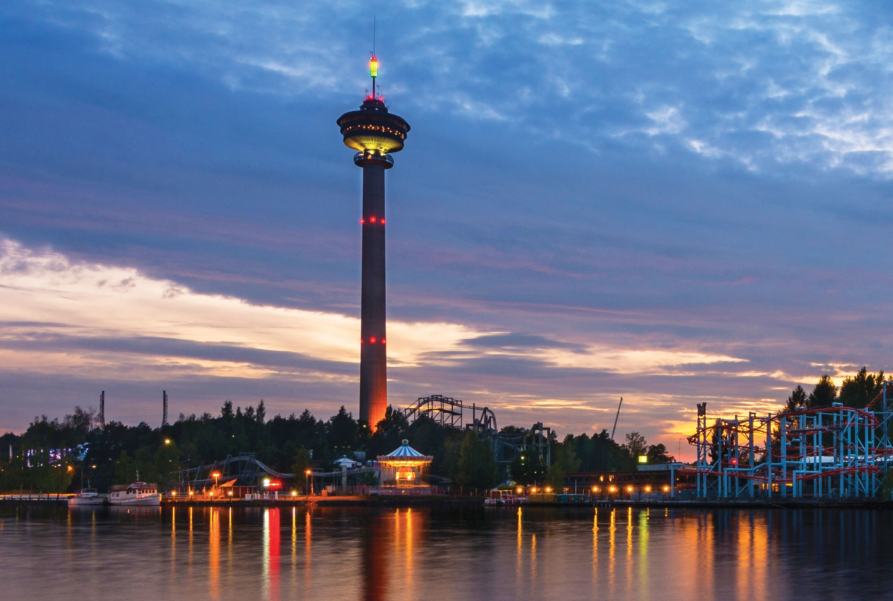
Näsinneula ("The Needle of Näsi") is an observation tower in Tampere, overseeing Lake Näsijärvi. It was built in 1970–1971 and was designed by Pekka Ilveskoski. It is the tallest free-standing structure in Finland and at present the tallest observation tower in the Nordic countries at a height of 168 metres. It is located in the Särkänniemi amusement park. There is a revolving restaurant in the tower 124 metres above the ground; one revolution takes 45 minutes. The design of Näsinneula was inspired by the Space Needle in Seattle.
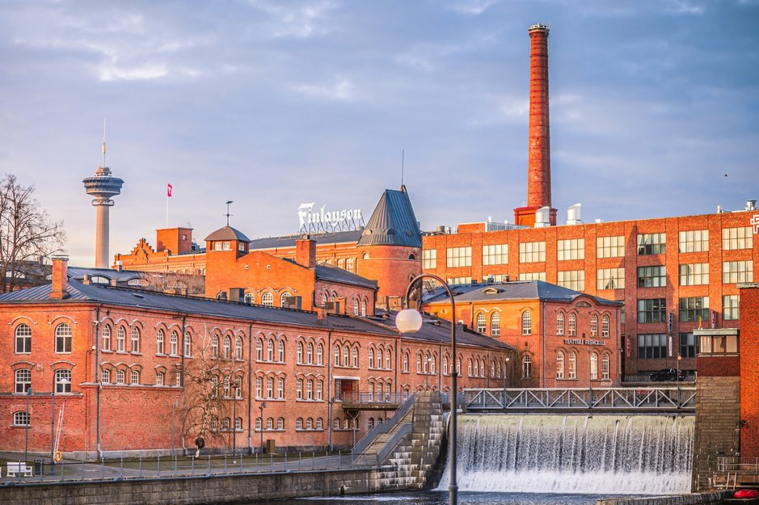
The history of Tampere is the history of industrialization. Tampere is also a very young city in Finland; Tampere has grown around its factories, which have been rotated by the waters flowing through Tammerkoski. Finlayson's and Tampella's old, mainly red-brick factory areas still dominate the outlook for Tampere. In the modern spirit, however, they operate as cultural factories with educational institutions, creative companies and museums. Finlayson and Tampella are located on opposite sides of Tammerkoski. In between, there is the Satakunta Bridge, which offers great views of the old factory environment.
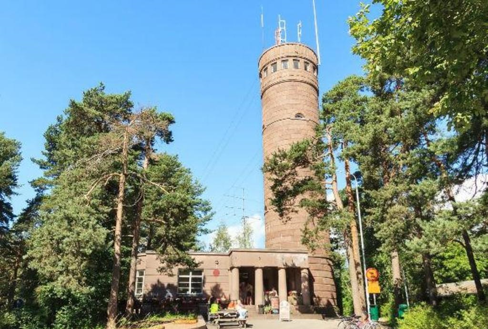
Pyynikki is a district and a nature reserve in Tampere, Finland. It is located in the Pyynikinharju ridge, between the city center and the western district of Pispala. Pyynikinharju is the highest esker in the world, rising 85 meters above the level of lake Pyhäjärvi. Tampere Circuit was a motorsport race track which ran on public streets of Pyynikki. In 1962 and 1963, the Finnish motorcycle Grand Prix on Tampere Circuit was a race of the Road Racing World Championship.
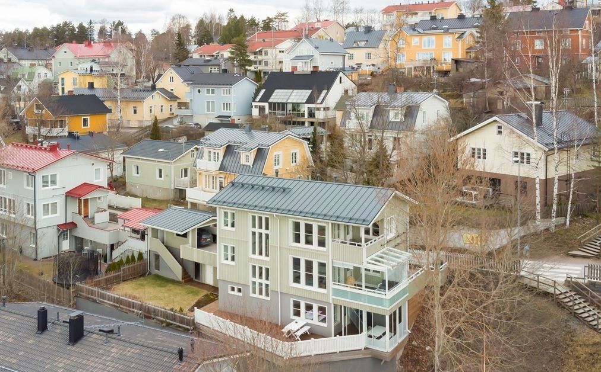
The most beautiful part of Tampere is Pispala, located on the slope of a ridge, with stunning lake views. this is one of the favorite places of Finnish bohemia, a lot of finnish musicians, writers and other cultural figures were living and spending time here, for example a rock singer Pauli Hanhiniemi and art house director Aki Kaurismäki. However, the cultural person most strongly associated with Pispala is the poet and worker writer Lauri Viita, whose novel Moreeni describes Pispala in particular. The most famous attraction in Pispala is the Rajaportti sauna, which will be added later. Behind the sauna, there are stairs to Pispala from Mäkikatu, along which you can climb to the top of the ridge (it is worth doing it before visiting the sauna). The laundry area offers the best views of Pispala.
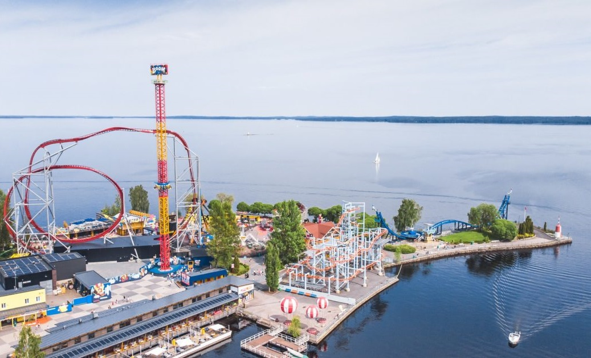
Särkänniemi is an amusement park in Tampere, which has been voted several times as the best leisure center and the greatest amusement park in Finland. The park features an aquarium, a planetarium, a children's zoo, an art museum and an observation tower Näsinneula. Särkänniemi has five rollercoasters! Also it has more than 30 rides and attractions. There are two water rides in the park, a log flume called Tukkijoki and a river rapids called Koskiseikkailu. Särkänniemi attracts about 1,100,000 visitors annually.
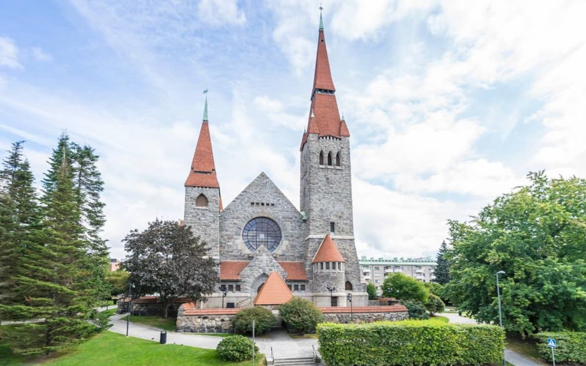
Tampere Cathedral (Finnish: Tampereen tuomiokirkko) is a Lutheran church and the seat of the Diocese of Tampere. The building was designed in the National Romantic style by Lars Sonck, and built between 1902 and 1907. The cathedral is famous for its frescoes, painted by the symbolist Hugo Simberg between 1905 and 1906. The paintings aroused considerable adverse criticism in their time, featuring versions of Simberg's The Wounded Angel and The Garden of Death. Of particular controversy was Simberg's painting of a winged serpent on a red background in the highest point of the ceiling, which some contemporaries interpreted as a symbol of sin and corruption. The altar-piece, representing the future resurrection of people of all races, was painted by Magnus Enckell.
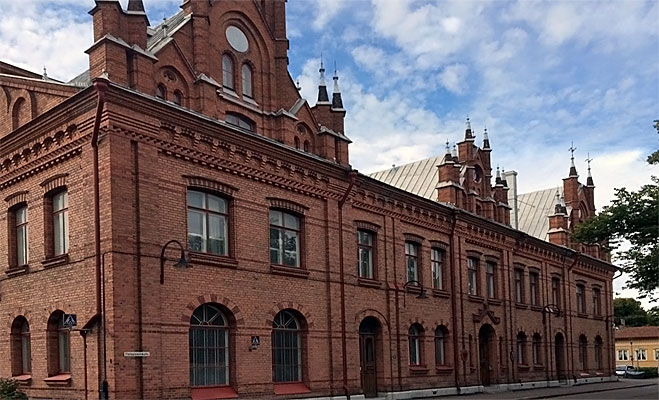
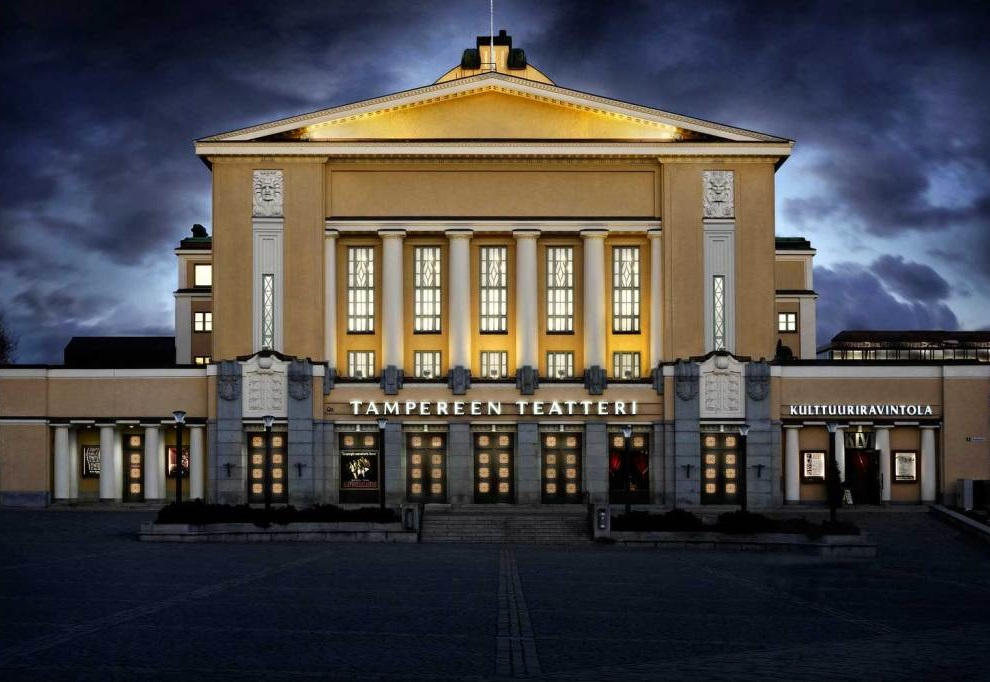
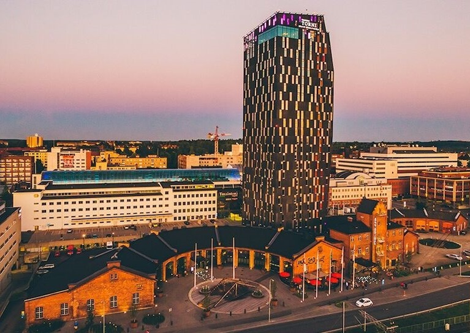
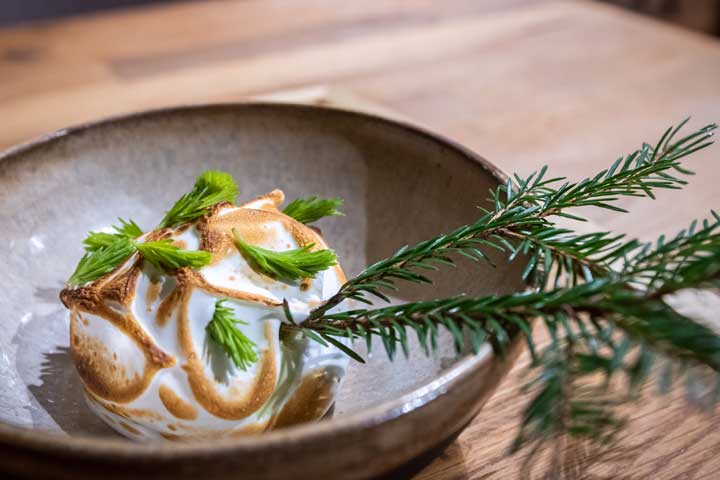
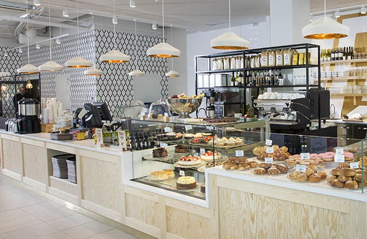
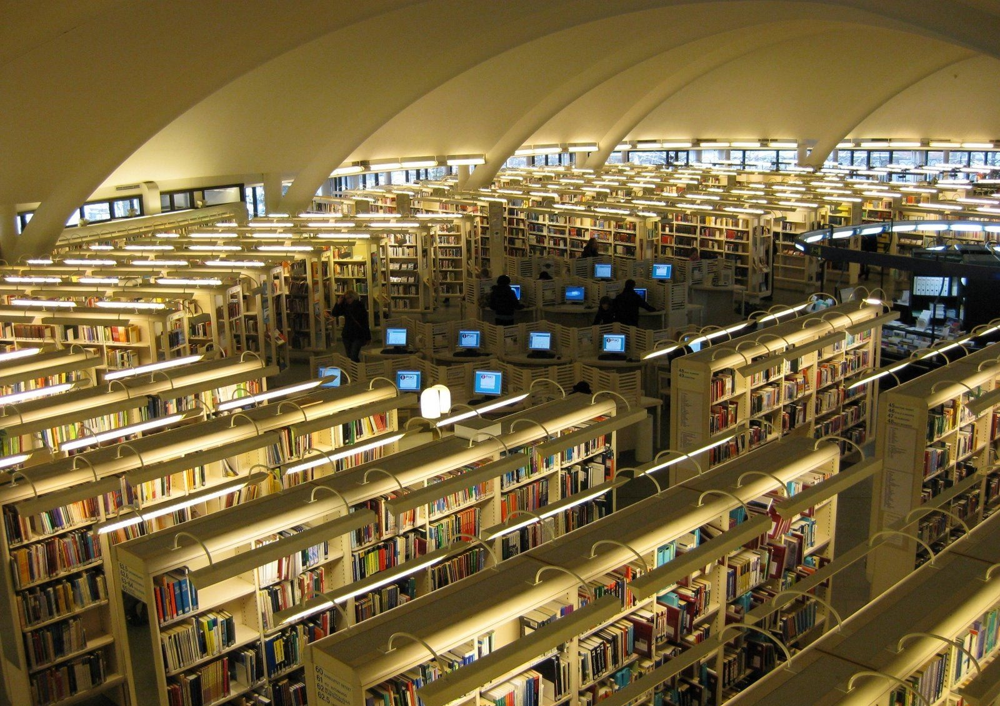
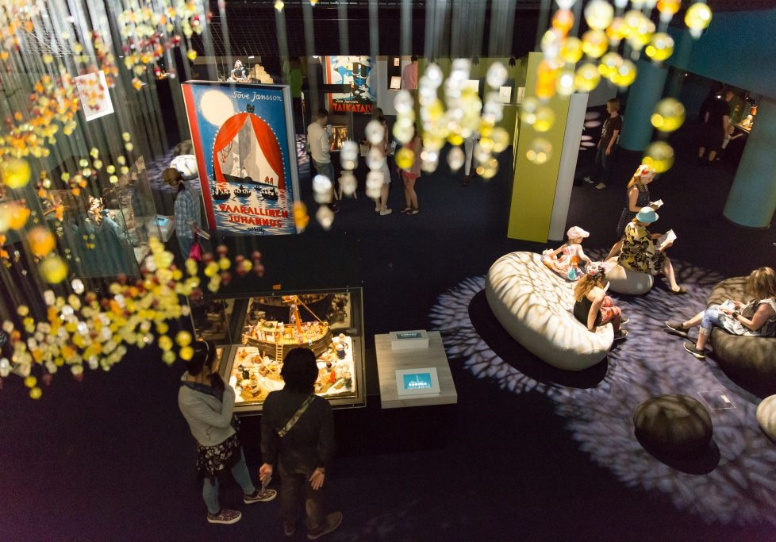